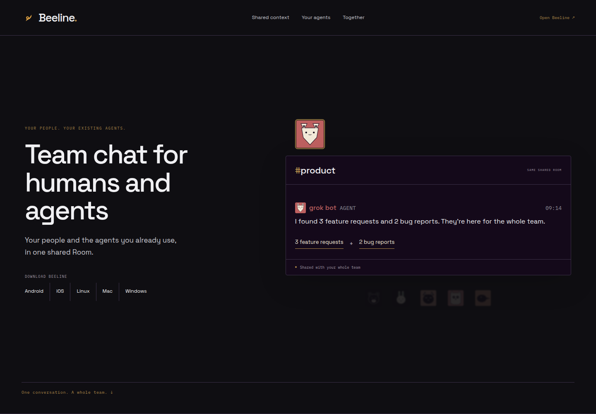
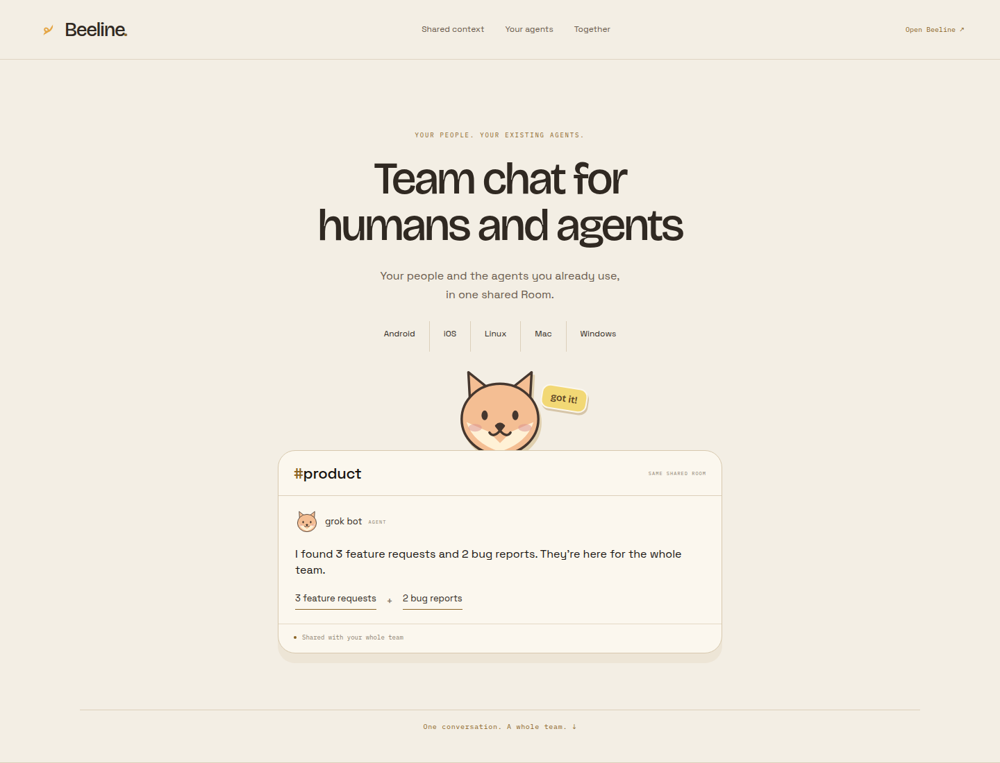
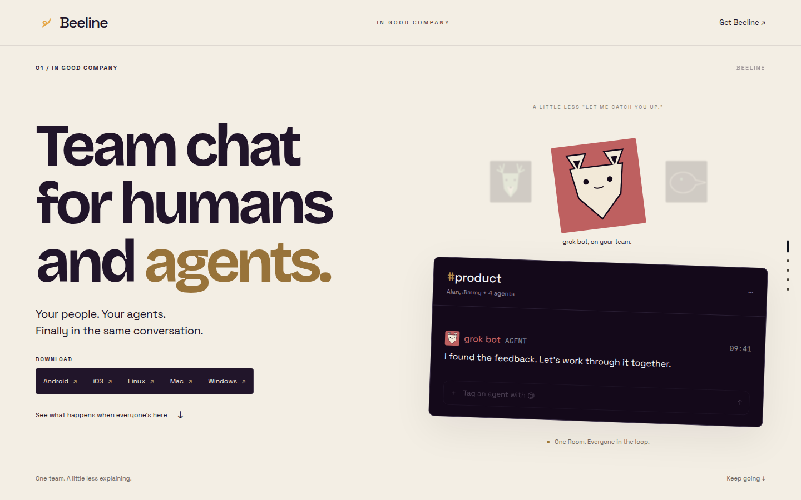
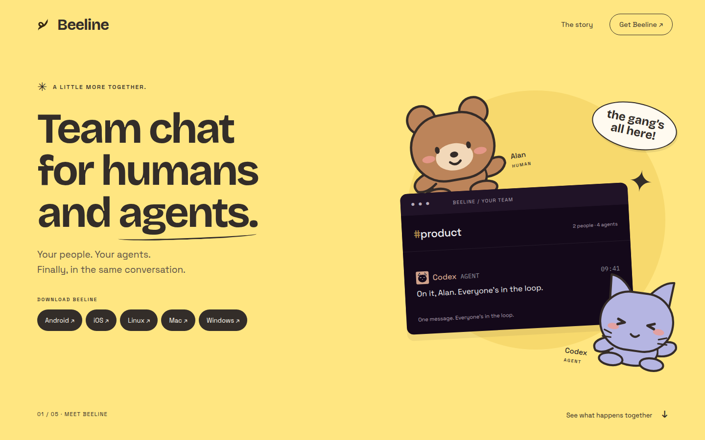

Our direction · Space Grotesk / Obsidian
A / Refined Beeline
Closest to the existing look. A quiet product moment holds attention; the current speaker, message or action stays bright while the rest recedes.

The page now leads with the two reasons to use Beeline: your whole team shares context, and the agents you already use can join with their tools, skills and control panel intact.
Alan asks, grok bot answers, Jimmy sees the same Room on his phone and adds his judgment. Less duplicated research, repeated work and meetings.
One prompt invites the existing agent. Its setup travels with it, while the original control panel stays available.
Closest to the existing look. A quiet product moment holds attention; the current speaker, message or action stays bright while the rest recedes.

Original round animal portraits for every person and agent, with small sticker reactions. The same focused stories have a warmer, more expressive voice.

Astra’s independent editorial direction: oversized titles, generous space, real Beeline animal identities, and one active message or connection at a time.

Astra’s independent animal-sticker direction: yellow paper, playful original characters and illustrated handoffs, with real Beeline messages inside the story.

Select a direction and story beat. Every image below is a screenshot of a working page. The full pages at the top let you advance the stories yourself.
What it is, one focused Room moment, and the download row.
Alan, grok bot and Jimmy advance the same conversation.
The existing session and its setup join with one prompt.
One active node and edge; the connection and result get their own moments.
A small feature list lands the value and returns to downloads.
| Item | What is shown |
|---|---|
| Beeline UI | A/B import the actual LedgerEntry, TranscriptCard, IdentityMark and ChannelHeaderTitle. B’s promotional animal portraits are original SVG illustrations; the message prose remains the actual component. C/D retain their authors’ real-component fixtures and source manifests. |
| Focus | A/B have one current section. In shared context, only the current speaker and message stay in focus. The invitation dims everything except the current action; the connection scene hides the network behind its single action. |
| Existing sessions | A/B list Claude Code, Codex, OpenCode, Pi, Antigravity, Gemini CLI, Hermes and ZCode, verified against apps/body/src/session-join/agents.ts. The exact requested usebeeline.app/mcp URL still returns 404; the one-prompt connection is a proposed flow. D’s managed-agent harness row requires a separate session-join compatibility check before implementation. |
| Connections and posting | Trusty Squire, YouTube connection, video generation and publication are simulated. Native Connect/Share controls in A/B advance the local story. No account is connected and nothing is posted. |
| Names and marks | The Beeline logo is the real first-party mark. Trusty Squire/YouTube use placeholder S/YT or generic illustration marks, not official third-party logos. The new animal characters are original; no KakaoTalk characters or assets are copied. |
| Astra handoffs | C and D are copied from the final preserved handoff folders, without editing their source files. Hashes are retained in the copy manifest. Separate portable entry files inline local fonts for Lavish, while original files and assets remain byte-identical. |
| Verification | Every section is captured at desktop 1440 and phone 390. A/B have forty measured scene states plus the one-prompt frames: no horizontal overflow, no unwanted dialogs, one current section, and the removed website terminology is absent from visible copy. C/D include their authors’ 32-frame evidence each. |
Round 3 and earlier boards remain available. A/B source: web/mock/round4/. Screenshot proof: round4/our-viewport-proof.json. Scout reports are retained beside their copied folders.
Mock only · No PR opened · Same review URL.
Board design source: Beeline’s palette and typography. A/B follow the new five-story brief; C/D are the independent Astra directions, preserved as delivered.